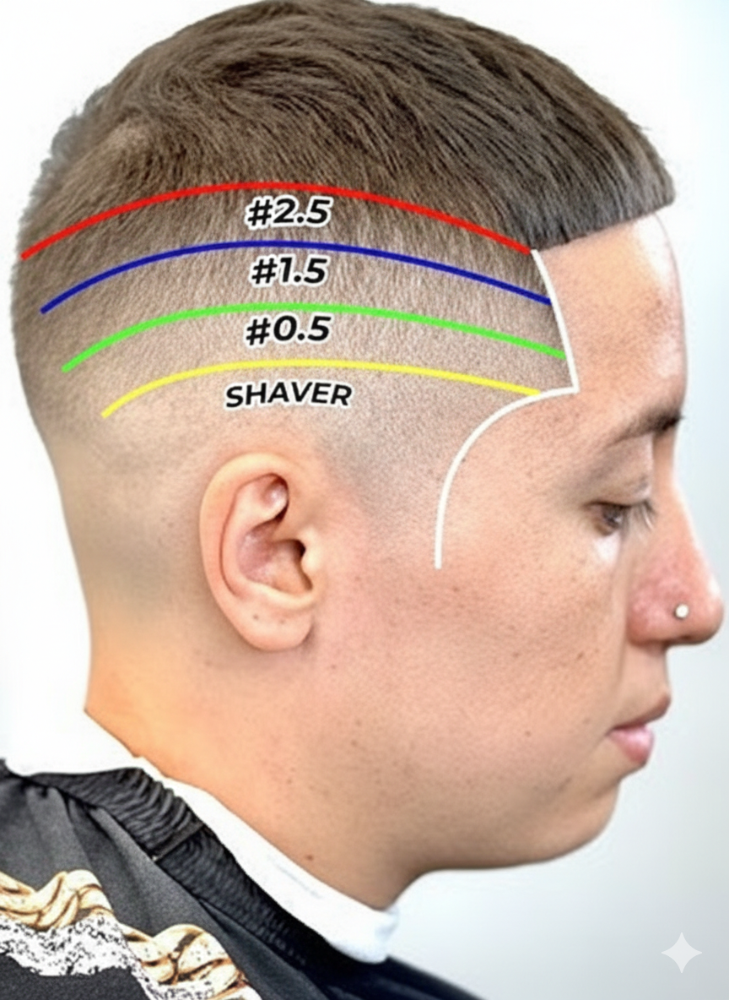

Clase 6: Degradado a 0
Clase 6: Degradado a Cero o Skin Fade
Consideraciones del Fade
El desvanecido o FADE es un mundo de posibilidades. Varía en altura, contraste y estilo. Las dos variantes principales son:
- Fade Comprimido: Una transición más corta y marcada, con un contraste alto.
- Fade Estirado: Se deja más espacio (aprox. 1 cm) entre cada guía, logrando una transición más suave y gradual.
Técnica Básica del Desvanecido
Estas son las guías y pasos clave para un fade básico desde cero:
- Línea 0 a 0.5: Para borrar la línea entre el 0 y el 0.5 (que se hace con el 0 y la palanca abierta), posiciona la palanca a la mitad y trabaja sobre la marca hasta desvanecerla.
- Línea 0.5 a 1: Para esta transición, usa el peine N° 1/2. Empieza con la palanca a la mitad y ve cerrándola a medida que te acercas a la línea que quieres borrar.
- Línea 1 a 1.5: Pasa el peine N° 1.5 (o 1 y 1/2) con la palanca abierta y luego ciérrala para atenuar la línea. Si queda alguna marca, repasa con el peine N° 1 y la palanca abierta.
- Conexión: Finalmente, pasa el peine N° 2 para suavizar la conexión, y luego el N° 3 para llegar a la zona de la herradura. Pule los últimos detalles con tijera.
Técnica Avanzada de Desvanecido
- Guía Cero: Marca tu línea base con el 0 a la altura deseada.
- Primera Transición: Crea la siguiente franja con el 0 y la palanca abierta (0.5) y procede a borrar la línea entre ambas.
- Segunda Transición: Sigue con el peine N° 1 y la palanca abierta. Borra la línea que se genera usando el peine N° 1/2 con la palanca a media altura.
- Tercera Transición: Continúa con el peine N° 1 y 1/2 con la palanca abierta. Luego, cierra la palanca para suavizar la línea. Si es necesario, repasa con el peine N° 1 y la palanca abierta.
- Conexión Final: Integra el degradado con la parte superior pasando el peine N° 2 y luego el N° 3, dando el acabado final con tijera.
Terminación
Los detalles finales marcan la diferencia entre un buen corte y un corte excepcional.
- Corte Superior: Trabaja la parte de arriba, aplicando las técnicas de división y corte con tijera ya vistas.
- Peinado: Realiza un peinado de presentación para que el cliente pueda apreciar el resultado final y quede completamente satisfecho.
- Contornos: Marca los contornos con la patillera, eligiendo la forma (cuadrada o redonda) que prefiera el cliente.
- Limpieza: Por último, elimina todos los restos de cabello del cuello y rostro. Puedes hacerlo con navaja o, si el cliente tiene piel sensible, con la propia máquina.
